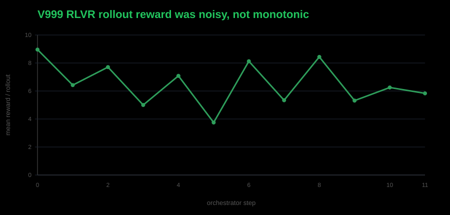
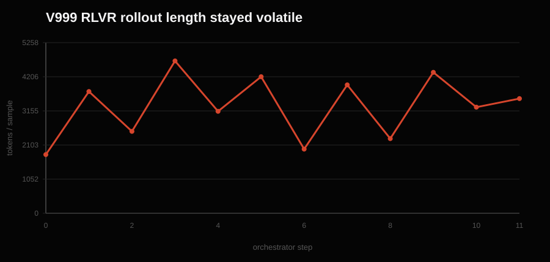

Glyph is a Rust tool-use agent. The model emits CALL tool(...) blocks, tools execute against real Rust crates, and then the model should stop with a clean FINAL.
I built Glyph as an end-to-end Rust tool-use agent experiment stack around PRIME-RL: synthetic task generation, SFT trace construction, held-out evals, the real Rust tool harness, RLVR task integration, reward validation, checkpoint export, and final pass@k measurement.
I used Claude Code and Codex heavily as coding assistants during implementation and debugging, but the system design, experimental decisions, eval criteria, data generation, RLVR setup, analysis, and final conclusions are mine.
The Contract Was the Real Lesson
The contract is not just “make cargo pass.” The contract is the whole trace:
CALL read_file(...)
RESULT ...
CALL apply_patch(...)
RESULT ...
CALL cargo_test(...) or CALL cargo_run(...)
RESULT status: success
FINAL: ...The result is not the RLVR win I wanted. SFT built the agent. RLVR changed the sampled distribution, but did not improve the held-out eval reliability on unseen Rust crates.
Each held-out prompt gives the model a crate path and a real tool-use task: patch code until cargo_test passes, patch code until cargo_run prints exact expected stdout, or simply run an already-correct crate and report the result.
| Held-out eval kind | Count |
|---|---|
patch_test_pass | 16 |
patch_test_recover | 24 |
patch_run_pass | 9 |
patch_run_recover | 10 |
run_only | 5 |
test_only | 5 |
The Metric Had To Match the Agent Contract
Early scoring was too loose. A metric called terminal_tool_success could credit a trace whose last successful tool was not a verifier. That is not a coding-agent success.
The metric that mattered became strict valid_trace:
valid_trace =
terminal cargo_test or cargo_run success
+ clean FINAL after that verifier success
+ exact CALL syntax
+ no role-marker leakage
+ no repetition or gibberish
+ no extra tool use after successful verificationIf the model passes tests but keeps patching, emits malformed calls, leaks role markers, or never finalizes, it is not a usable tool-use agent.
SFT Was the Main Result
The first strong SFT model, SFT_V1, scored 52/69 on strict held-out-69. That was the real first artifact: a 4B base model learned the CALL/RESULT/FINAL protocol well enough to edit Rust projects, run cargo verifiers, and solve most of the held-out set.
Then I tried deeper SFT data. SFT_V2 added variable-depth recovery. SFT_V3 added deeper recovery plus oversampled clean PASS → FINAL traces.
The broad held-out score did not improve. But on the original 17 held-out problems that SFT_V1 failed, SFT_V2 solved 4/17 and SFT_V3 solved 5/17. Harder recovery data added tail capability, but disturbed broad reliability.
The Clean Split
That tradeoff is why SFT_HALF_A exists. I stopped trying to RLVR whichever old SFT checkpoint looked best. To make the experiment clean, I split synthetic_data/signal_v3.jsonl, the dataset used to train SFT_V3, into two deterministic halves.
The SFT and RLVR pool came from this synthetic trace dataset; the held-out eval remained separate unseen Rust crates.
SFT_HALF_A: 1,042 rows, 762 unique case_ids
RL_POOL_B: 1,041 rows, 760 unique case_ids
case_id overlap: 0
trace overlap: 0SFT_HALF_A trained only on half A and scored 51/69 on strict held-out-69, greedy pass@1 using strict valid_trace. That became the baseline. RLVR needed to beat it using non-overlapping pool B.


Debugging the RLVR Harness
Several RLVR attempts failed before the final clean readout. I initially read the full-finetune regression as destructive RL, but I no longer think that is a clean conclusion. Those runs still had SFT/RLVR alignment problems: the reward, chat/tool rendering, and export path were not yet enforcing the exact same contract as the SFT data and held-out eval.
The three harness lessons
- RL reward must match held-out success.
- RL rendering must match the SFT/eval tool protocol.
- RL checkpoint export must match the policy actually served during training.
Official checkpoint path
outputs/<RUN>/run_default/broadcasts/step_N/Export as a PEFT adapter and evaluate as base model plus adapter.
Export was the nastiest one. Two checkpoints appeared to collapse to 0/69, but the traces were not random. They had one extra parenthesis:
CALL read_file(id="c1", file_path="..."))Strict eval rejected every malformed call, no tools ran, and the score went to zero. That looked like RL destroyed the model. It had not. The bad repos came from non-canonical full-weight exports. The served RL policy was base model plus the broadcast LoRA adapter; weights/step_N was not the clean served policy.
The First Clean RLVR Readout
The cleanest early case-level RLVR readout was RLVR_V1000 step 25, evaluated through a direct local merge of the broadcast adapter:
SFT_HALF_A: 51/69
RLVR_V1000 step25 direct merge: 50/69So it did not improve overall. But it did solve one held-out problem that SFT_HALF_A failed.

The gained case, eval100_039_select_event_codes_partial_then_full_fix, matters because it is exactly the kind of recovery loop SFT still struggled with: repeated plausible patches, real verifier feedback, and a limited tool budget that runs out if the model does not reach a solution.
SFT_HALF_A made 21 tool calls, never passed the tests, exhausted the budget, and emitted no clean final. RLVR_V1000 made a better fourth patch, got cargo_test passing at call c12, and emitted a clean one-line FINAL.
FINAL. But the same checkpoint regressed two cases that SFT solved.The Final Clean RLVR Still Regressed Strict Greedy Validity
The final run had everything verified: a binary reward measured to emit exactly 0 or 10, a chat template byte-identical to the SFT/eval trace format with a launch-time parity assertion, and the safe adapter export path. The adapter checkpoints still lost on greedy held-out eval:

The Final pass@4 Check
The cheap decisive check was held-out-69 pass@4 with the final clean adapter path: SFT_HALF_A versus SFT_HALF_A + RLVR_V999_STEP10, same prompts, same tool budget, same temperature, real cargo execution, and separate sandbox per rollout.

| Metric | SFT_HALF_A | RLVR_V999_STEP10 |
|---|---|---|
| Valid pass@4 prompts | 59/69 | 59/69 |
| Valid rollouts | 185/276 | 190/276 |
| 4/4 stable prompts | 31/69 | 35/69 |
| Cargo-only pass@4 prompts | 60/69 | 62/69 |
The aggregate prompt-level result was flat. Cargo pass@4 ticked up, but that was within the same noise floor as everything else. The one reproducible negative effect was run-only final-answer hygiene drift: two run-only losses kept cargo passing 4/4 while validity fell to 0/4 because the policy copied multiline stdout into FINAL.


Decomposing the Loss: Solving vs Finalizing
Scoring the same greedy traces on cargo verifier success alone separates Rust solving from strict agent validity:
| Model | Greedy cargo solved | Greedy valid_trace |
|---|---|---|
| SFT_HALF_A | 51/69 | 51/69 |
| V999 step 5 | 51/69 | 46/69 |
| V999 step 10 | 50/69 | 45/69 |
Cargo-only pass@4 ticked up from 60/69 to 62/69 prompts, but it sits inside the same noise floor. The strict regression is final-answer hygiene, concentrated in run-only drift.
This is not a reward-contract failure. The reward scored multiline-FINAL successes exactly 0, verified across every rollout. It is a training-coverage failure: the correct contract had almost no run-only groups to apply gradient to, so unrelated drift in that region went undefended.
Where This Ends
SFT is the main result.
Strict evals are non-negotiable.
Cargo pass@4 ticked up 60/69 -> 62/69, within noise.
But strict agent validity did not improve: strict pass@4 stayed 59/69,
and greedy strict held-out regressed 51/69 -> 45/69.
The gap came from final-answer hygiene drift, especially run_only cases.
Most apparent RL collapse was harness, reward, protocol, or export mismatch,
not the policy.I wanted a simple RLVR result. The useful finding is sharper: verifier RL only works if the verifier matches the full behavior you actually want. For tool-use agents, the contract is the whole trace, not just the verifier.